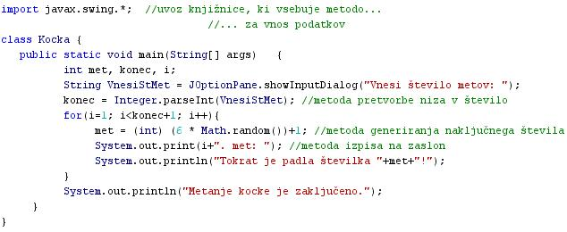

KNJIŽNICE, SPECIFIKACIJA IN IMPLEMENTACIJA
- Standardne knjižnice
- Veèina programskih jezikov vsebuje knjižnice.
- Knjižnice so na razpolago programerjem pri pisanju programov.
- Knjižnice vsebujejo definicije in opise algoritmov, podatkovnih struktur in postopkov za izvajanje vnosa in iznosa podatkov, ki jih pri programiranju uporabljamo zelo pogosto.
- Nekatere naloge in postopki se pri programiranju pojavljajo in ponavljajo tako pogosto in so vedno enake, da je bolj uèinkovito, èe te naloge sprogramiramo posebej, jih shranimo na posebnem mestu in ko jih potrebujemo, jih v naš program vkljuèimo z enim samim klicem.
- Posebno mesto, na katerem take vedno enake in pogosto uporabljane postopke hranimo, imenujemo knjižnice.
- Te algoritme ali postopke imenujemo tudi metode, funkcije, podprogrami ali subrutine.
- Tudi Java vsebuje knjižnice, iz katerih klièemo metode.
- Knjižnice, ki morajo biti po dogovoru na razpolago prav vsem razlièicam in razvojnim okoljem programskih jezikov, imenujemo standardne knjižnice.
- Èe želimo v naših programih uporabiti metodo, ki je vkljuèena v kateri izmed knjižnic, moramo tisto knjižnico, ki vsebuje želeno metodo, v naš program uvoziti.
- Specifikacija programskega jezika
- Specifikacija programskega jezika so definicije in opisi delovanja in namena posameznih elementov jezika.
- S pomoèjo teh opisov lahko uporabniki ugotovijo, ali program deluje pravilno in v skladu z izvorno kodo.
- Specifikacija programskega jezika je lahko podana v obliki natanènih opisov sintakse in izvršilne semantike programskega jezika.
- Sintaksa je veèinoma predstavljena kar s formalnimi pravili skladnje oziroma slovniènimi pravili.
- Semantiène definicije oziroma definicije pomenov pa so lahko predstavljene kar z opisi v naravnih (èloveških) jezikih.
- Implementacija programskega jezika
- Implementacija je naèin izvajanja oziroma uporabe programa.
- Naèin izvedbe/uporabe programa je odvisen tako od vrste strojne kakor tudi od vrste programske opreme.
- Loèimo dva osnovna naèina implementacije programskega jezika: prevajanje in tolmaèenje
- Primer:
- Besedni opis problema in rešitve.
- "Zapiši program, ki najprej pozove k vpisu števila metov kocke, nato izvede želeno število metov in po vrsti izpiše rezultate metov enega pod drugim.": Vprašamo se, kaj vse bomo morali postoriti za rešitev problema in to opišemo v nekaj stavkih. Potek reševanja problema poskusimo premisliti èim bolj natanèno.
- vnesemo želeno število metov
- zanko preletimo tolikokrat, kolikor zaša vnešeno želeno število metov
- ob vsaki izvedbi zanke zaluèamo kocko in izpišemo izid meta
- kot izid meta bomo upoštevali rezultat generatorja nakljuènih števil
- v Javi lahko kot generator nakljuènih števil uporabimo metodo "Math.random()"
VAJA 41:
- V okolju za pisanje izvorne kode v jeziku Java, za prevajanje in za interaktivno delo zapiši zgornji program "Kocka". Pomagaj si s sliko.
- Kodo lahko tudi kopiraš iz te datoteke in jo prilepiš v okolje, v katerem pišeš programèke. Pozor: koda, ki jo boš kopiral/a, vsebuje eno, dve, tri ali štiri napake. Èe želiš, da bo program deloval, moraš napake odkriti in jih odpraviti.
- Izvorno kodo shrani pod imenom "ImePriimek41.java". ImePriimek je seveda tvoje lastno ime in priimek.
- Datoteko "ImePriimek41.java" prevedi.
- Prevedeno datoteko zaženi, preveri rezultat v interaktivnem oknu in poklièi profesorja, da vidi rezultat.
- Sam/a skonstruiraj diagram poteka v tej uèni enoti in ga nariši v zvezek.
1. Vprašanja:
1. Kaj so knjižnice programskih jezikov?
2. Kaj vsebujejo knjižnice programskih jezikov?
3. Kaj je naloga specifikacije programskega jezika?
4. Kaj je implementacija programsjega jezika?
5. Katera sta dva osnovna naèina imlementacije programskega jezika?
6. Zapiši vse metode, ki jih najdeš v primeru te uène enote.
7. Zapiši knjižnice ali knjižnico, ki smo jih ali smo jo uvozili v primeru te uène enote.
8. Zapiši metodo v Javi, ki generira nakljuèna števila.
9. Zapiši metodo v Javi, ki pretvori niz v celo število.
10. Koliko stavkov vsebuje zanka "for" v primeru te uène enote?
2. Zapiši od ene do pet kljuènih besed, ki povzemajo vsebino te uène enote.
3. Povezave do dodatnih informacij.
Pregled knjižnic v Javi.
Angleška verzija Wikipedije.
|